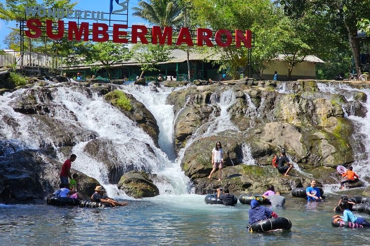
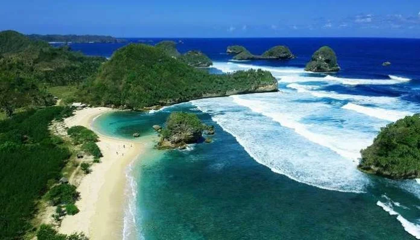
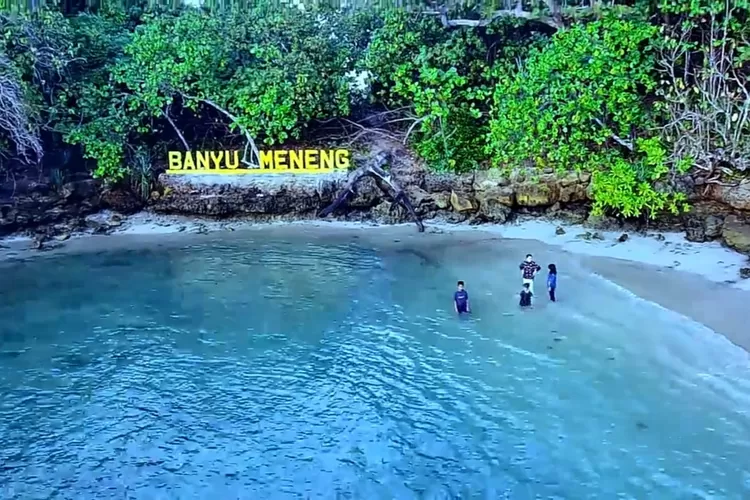

Sumber Maron👇🏻
 Berlokasi di Desa Karangsuko, Kecamatan Pagelaran, Kabupaten Malang.
Dengan HTM= Rp.5000 - Rp. 10.000, pengunjung bisa menyusuri sungai sepanjang 500 meter dan menyewa ban dengan tarif Rp. 5000.
Pantai Watu Leter👇🏻
 Terletak di tepi Samudera Hindia secara administratif berada di Dusun Rowotrate, Desa Sitiarjo, Kecamatan Sumbermanjing Wetan, Kabupaten Malang, Jawa Timur. Pantai ini terletak bersebelahan dengan Pantai Goa China.
HTM= Rp. 10.000
Pantai Banyu Meneng👇🏻
 Berada di Kecamatan Bantur, Kabupaten Malang, Jawa Timur. Jarak tempuh dari Kota Malang itu sendiri sejauh 62 kilometer yang memakan waktu kurang lebih 2 jam. HTM= Rp. 10.000